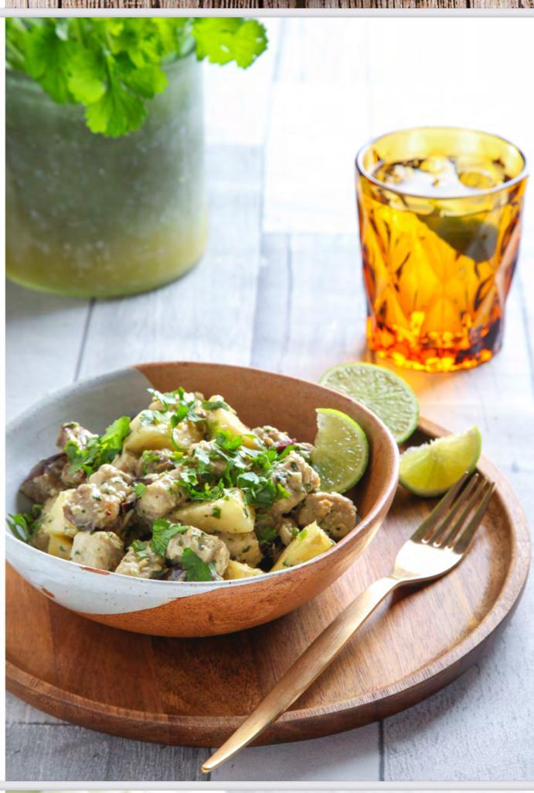

Coconut and Pineapple Curry

Description
description of recipe
Ingredients
- 1 green Thai chilli
- 1 thumb size piece of ginger
- 1 clove of garlic
- 1 stalk of lemongrass
- Small bunch of fresh coriander, chopped
- 1 teaspoon of coconut oil
- 1 small aubergine, cut into small cubes
- 3 palm size and thickness amounts of Quorn pieces
- 1/2 small pineapple, diced
- 3 tablespoons of coconut milk (carton)
- Juice of 1/2 a lime
Steps
- Blitz together chilli, ginger, garlic, lemongrass and most of the coriander in a food processor to make a rough paste.
- In a non stick pan, heat the coconut oil, add the aubergine and fry for 8-10 minutes until softened.
- Add the Quorn pieces and curry paste, stir well to coat everything thoroughly with the paste and cook for a further 5 minutes.
- Add the diced pineapple and coconut milk and cook for 1 - 2 minutes.
- Serve in your favourite bowls with the lime juice and sprinkle over the remaining coriander.
- Enjoy!
Return to main page